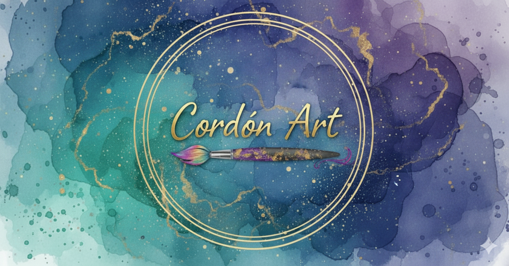

CARGANDO MUNDO NAIF...
Recorriendo Honduras a través del color
Gestor cultural y artista plástico con exposiciones a nivel nacional e internacional. Como parte del proyecto PICCCMAH de la SECAPPH, mi obra captura la esencia vital de la flora y fauna hondureña.